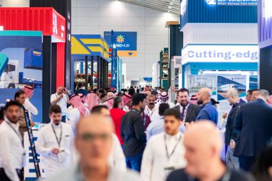
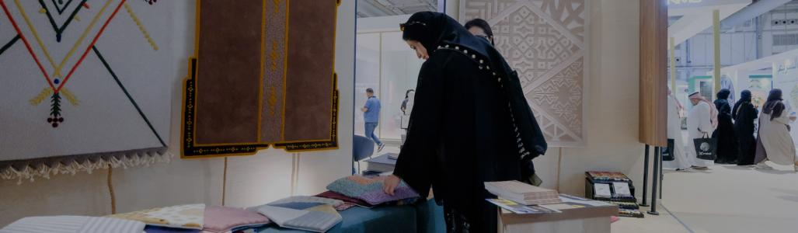
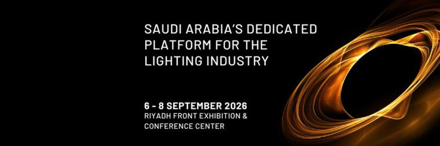
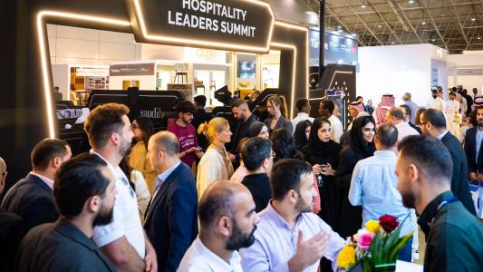
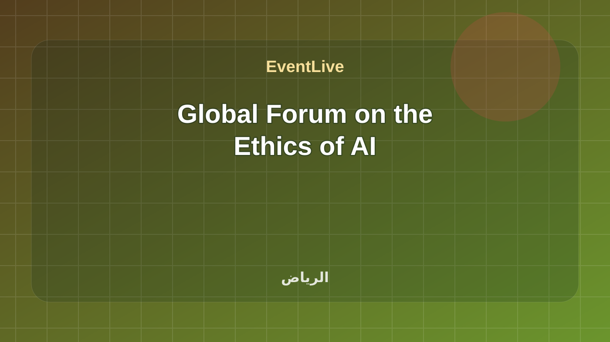
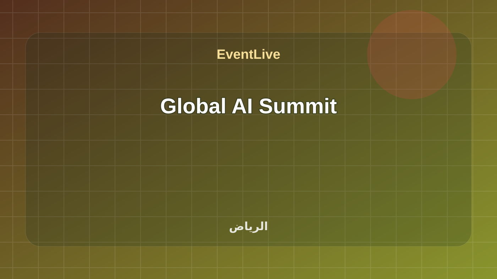
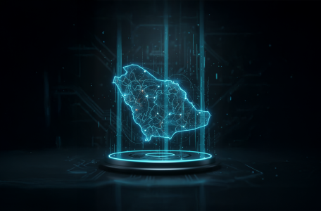
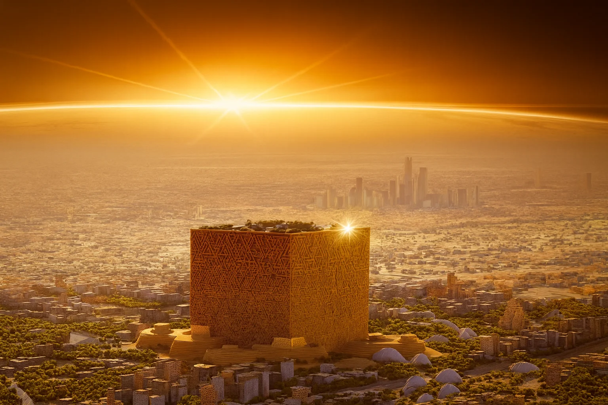
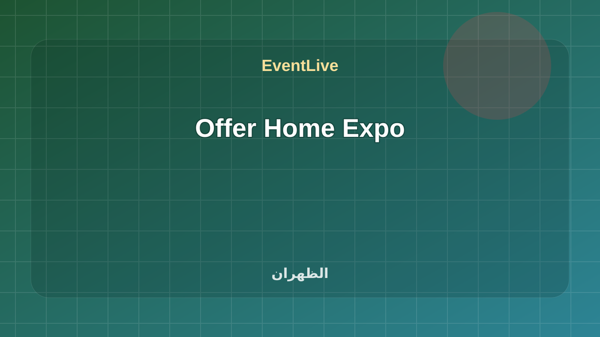

تابع مؤتمرات ومنتديات
هذه الروابط تتحدث مع كل بناء وتعرض الفعاليات القادمة والجارية لهذا السياق فقط.
مؤتمرات ومنتديات في السعودية مع وقت الفعالية ومكانها ومصدرها وحالة الجدول الحي.
هذه الروابط تتحدث مع كل بناء وتعرض الفعاليات القادمة والجارية لهذا السياق فقط.
نموذج فعالية حي يوضح تجربة EventLive عند وصول الزائر: الجلسة الحالية، التالية، القاعة، ومعلومات الوصول. ملتقى التحول الرقمي في القطاع الحكومي 2026 ضمن مؤتمرات ومنتديات في الرياض. تبدأ الفعالية ١٠/٠٧/٢٠٢٦، ٩:٠٠ ص وتنتهي ١٠/٠٧/٢٠٢٦، ٢:٠٠ م حسب البيانات المتاحة. تتوفر لها صفحة جدول حي تساعد الزائر على متابعة الحالة والوقت أثناء الحضور. المصدر: ملف البرنامج المعتمد من الجهة المنظمة.

نموذج فعالية حي يوضح تجربة EventLive عند وصول الزائر: الجلسة الحالية، التالية، القاعة، ومعلومات الوصول. ملتقى التحول الرقمي في القطاع الحكومي 2026 ضمن مؤتمرات ومنتديات في الرياض. تبدأ الفعالية ١٠/٠٧/٢٠٢٦، ٩:٠٠ ص وتنتهي ١٠/٠٧/٢٠٢٦، ٢:٠٠ م حسب البيانات المتاحة. تتوفر لها صفحة جدول حي تساعد الزائر على متابعة الحالة والوقت أثناء الحضور. المصدر: ملف البرنامج المعتمد من الجهة المنظمة.
تفاصيل الحضور
فعالية مدرجة في التقويم الرسمي لـ Dhahran Expo. الموعد: ٢٤ أغسطس ٢٠٢٦ في ٠٩:٠٠ ص إلى ٢٦ أغسطس ٢٠٢٦ في ٠٦:٠٠ م. المنظم: Aldrich International L.L.C..
تفاصيل الحضور
Saudi Warehousing & Logistics Expo runs from 30 August to 1 September 2026 at Riyadh Front Exhibition & Conference Center, bringing together the Kingdom’s most influential supply chain leaders and solution providers to drive smarter, more efficient logistics. Focused on empowering efficiency across warehousing, transport, and end-to-end supply chains, the expo offers exhibitors direct access to key decision-makers, a high-visibility platform to showcase and launch innovations, and targeted networking that supports business growth aligned with Vision 2030’s logistics transformation goals. Register Now
تفاصيل الحضور
Saudi Food Manufacturing returns to Riyadh as the Kingdom’s hub for next-generation food technology, automation, and global partnerships supporting industrial growth and Vision 2030 economic diversification. The show brings together international exhibitors, leading manufacturers, and senior decision-makers to explore smart factories, advanced processing, sustainable solutions, funding and investment opportunities, and the latest innovations shaping the future of F&B manufacturing. Alongside the exhibition, the Food Forward Summit features expert-led insights on innovation economics, greener production, and smarter manufacturing, while the “Get Connected” B2B programme matches exhibitors with selected factory owners and top buyers for focused, high-value meetings on the show floor. Register Now
تفاصيل الحضور
INDEX Saudi Arabia takes place 6–8 September 2026 at Riyadh Front Exhibition & Conference Center, bringing together global interior design and fit-out brands with thousands of buyers and decision-makers shaping the Kingdom’s fast-growing design sector. Co-located with Lighting Design & Technology Expo, the event offers a key meeting point for interior designers, architects, developers, hotel owners and operators, fit-out specialists, and distributors to source the latest solutions across furniture, kitchen and bathroom, surfaces and flooring, décor, textiles, lighting, home automation, building materials, and architectural hardware—supported by inspiring conferences and expert speakers.
تفاصيل الحضور
Taking place 6–8 September 2026 at Riyadh Front Exhibition & Conference Center, the Lighting Design & Technology Expo is Saudi Arabia’s dedicated platform for lighting professionals, connecting global manufacturers, solution providers, and design specialists with key buyers from giga projects, government entities, and leading developers. From architectural, decorative, and outdoor lighting to smart and sustainable technologies, co‑located with INDEX Saudi Arabia, the expo showcases innovations that enhance aesthetics, energy efficiency, and user experience—serving hospitality, commercial, retail, and residential projects across the Kingdom’s fast-growing construction and design landscape.
تفاصيل الحضورفعالية مدرجة في التقويم الرسمي لـ Dhahran Expo. الموعد: ٨ سبتمبر ٢٠٢٦ في ٠٩:٠٠ ص إلى ١٠ سبتمبر ٢٠٢٦ في ٠٦:٠٠ م. المنظم: Aldrich Int’l LLC.
تفاصيل الحضور
Hotel & Hospitality Expo Saudi Arabia takes place in Riyadh from 13–15 September 2026 at the Riyadh Front Exhibition & Conference Center, bringing together leading local and international brands with some of the Kingdom’s most influential buyers across the hotel and hospitality sector. As Saudi Arabia’s tourism and travel growth accelerates in line with Vision 2030, the expo offers a prime platform to build partnerships, discover the latest trends and technologies, and connect with global exhibitors and designers. Visitors can explore a comprehensive range of solutions covering hospitality interiors, operating supplies and equipment, HoReCa and food services, cleaning and hygiene, hospitality technology, hotel services, and wellness (gyms, recreation, spa, and sports). Inquire Now
تفاصيل الحضور
فعالية رسمية من SDAIA. التاريخ المعلن: 9/14/2026 - 9/17/2026. Global Forum on the Ethics of AI ضمن مؤتمرات ومنتديات في الرياض. تبدأ الفعالية ١٤/٠٩/٢٠٢٦، ٩:٠٠ ص وتنتهي ١٧/٠٩/٢٠٢٦، ٦:٠٠ م حسب البيانات المتاحة. تعرض الصفحة وقت الفعالية وموقعها ومصدرها وروابط التقويم والاتجاهات عند توفرها. المصدر: SDAIA Calendar and Events.
تفاصيل الحضور
Under the patronage of His Royal Highness the Crown Prince, the Riyadh Global Medical Biotechnology Summit returns for its fourth edition on 14–16 September 2026, organized by the Ministry of the National Guard (NGHA) in strategic partnership with the Ministry of Investment (MISA). The summit is a leading international platform bringing together government leaders, decision-makers, pharmaceutical executives, innovators, and investors to explore advances in medical biotechnology, cell and gene technologies, and AI in life sciences—supporting Saudi Vision 2030 through innovation, bioeconomy development, and high-quality investment, while reinforcing the Kingdom’s role in biomedical research and future public health solutions. Register Now
تفاصيل الحضور
فعالية رسمية من SDAIA. التاريخ المعلن: 9/15/2026 - 9/17/2026. Global AI Summit ضمن مؤتمرات ومنتديات في الرياض. تبدأ الفعالية ١٥/٠٩/٢٠٢٦، ٩:٠٠ ص وتنتهي ١٧/٠٩/٢٠٢٦، ٦:٠٠ م حسب البيانات المتاحة. تعرض الصفحة وقت الفعالية وموقعها ومصدرها وروابط التقويم والاتجاهات عند توفرها. المصدر: SDAIA Calendar and Events.
تفاصيل الحضورUnder the patronage of His Royal Highness Prince Mohammed bin Salman bin Abdulaziz Al-Saud, Crown Prince and Prime Minister, the Global AI Summit (GAIN 2026) takes place at King Abdulaziz International Convention Centre in Riyadh, bringing together global leaders, innovators, and decision-makers to explore how generative AI can move from ambitious theory to real-world outcomes. Through keynotes, discussions, showcases, and immersive experiences, the summit focuses on the big questions shaping AI’s future—responsible development, practical adoption, and collaboration—highlighting breakthroughs that can accelerate progress, strengthen resilience, and create measurable benefits for people and communities worldwide. Live Stream of GAIN
تفاصيل الحضور
The International Conference & Exhibition for Facility Management 2026 returns to Riyadh for its third edition from 20–22 September 2026 at the Riyadh International Convention & Exhibition Center, under the theme “Smart Facilities – Smart Cities.” Bringing together sector leaders, local and international experts, and innovators, the event highlights the latest technologies and solutions shaping smarter, more sustainable urban environments—showcasing the integration of facility management with digital transformation, IoT, and artificial intelligence. With a focus on global and local best practices, knowledge exchange, and future-ready solutions that enhance efficiency, sustainability, and quality of life, the conference supports Saudi Vision 2030 and the Kingdom’s journey toward smart infrastructure and advanced resource management. Register Now
تفاصيل الحضور
Web Summit is one of the world’s largest technology conferences, bringing together founders, startups, investors, and tech leaders for networking, insights, and industry-leading sessions covering tech innovation, startup growth, and digital trends.
تفاصيل الحضور
فعالية رسمية من تقويم جامعة الملك عبدالعزيز. التاريخ المعلن: 01 Dec 2026 - 02 Dec 2026. Future Frontiers for Businesses: Catalysts for Growth in a Transformational Economy ضمن مؤتمرات ومنتديات في جدة. تبدأ الفعالية ٠١/١٢/٢٠٢٦، ٩:٠٠ ص وتنتهي ٠٢/١٢/٢٠٢٦، ٦:٠٠ م حسب البيانات المتاحة. تعرض الصفحة وقت الفعالية وموقعها ومصدرها وروابط التقويم والاتجاهات عند توفرها. المصدر: Saudi Universities and Technical Colleges.
تفاصيل الحضورفعالية مدرجة في التقويم الرسمي لـ Dhahran Expo. الموعد: ٧ ديسمبر ٢٠٢٦ في ٠٩:٠٠ ص إلى ٩ ديسمبر ٢٠٢٦ في ٠٦:٠٠ م. المنظم: AYM Events.
تفاصيل الحضور
فعالية ضمن تقويم Dhahran Expo 2026. التاريخ المعلن: 30 April – 2 May. المنظم: Saudi Pharmaceutical Society. Saudi Int’l Conference on Pharmaceutical Sciences ضمن مؤتمرات ومنتديات في الظهران. تبدأ الفعالية ٣٠/٠٤/٢٠٢٦، ٩:٠٠ ص وتنتهي ٠٢/٠٥/٢٠٢٦، ٦:٠٠ م حسب البيانات المتاحة. تتوفر لها صفحة جدول حي تساعد الزائر على متابعة الحالة والوقت أثناء الحضور. المصدر: Dhahran Expo Calendar.
تفاصيل الحضور
فعالية رسمية من تقويم جامعة الملك عبدالعزيز. التاريخ المعلن: 06 Apr 2026 - 08 Apr 2026. Invitation to Attend the 13th Career Forum at King Abdulaziz University ضمن مؤتمرات ومنتديات في جدة. تبدأ الفعالية ٠٦/٠٤/٢٠٢٦، ٩:٠٠ ص وتنتهي ٠٨/٠٤/٢٠٢٦، ٦:٠٠ م حسب البيانات المتاحة. تعرض الصفحة وقت الفعالية وموقعها ومصدرها وروابط التقويم والاتجاهات عند توفرها. المصدر: Saudi Universities and Technical Colleges.
تفاصيل الحضور